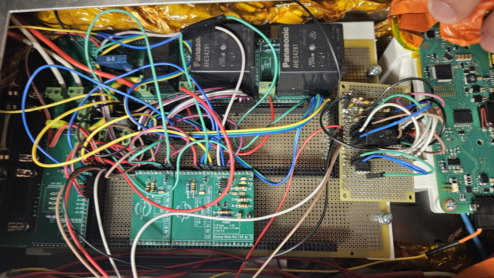

PROJECT / ELECTRONICS
Low Voltage Safety Loop
The goal of this project was to implement a low voltage safety loop the system managed several things on the car.
- control fault lights
- handle enableing drive
- VCU controls
- handel input signals
2024-2025 version

this version "worked" and was the first time in several years that the car worked. however it had major issues, It was connected by individule wires making debuging a nightmare and making any change was risky. At competition one of the boards broke becuase it was connected wrong so we had to rebuild it on a prototype board. the goal for the new version was remove the losse wires and improve the overall reliability of the system. This was my first time designing PCBs so it was a really good learning experaince.

The new version of the low voltage system was designed to eliminate all non board to board connections posible.